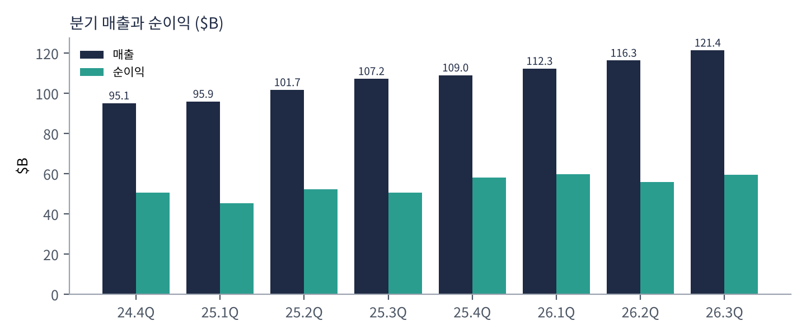
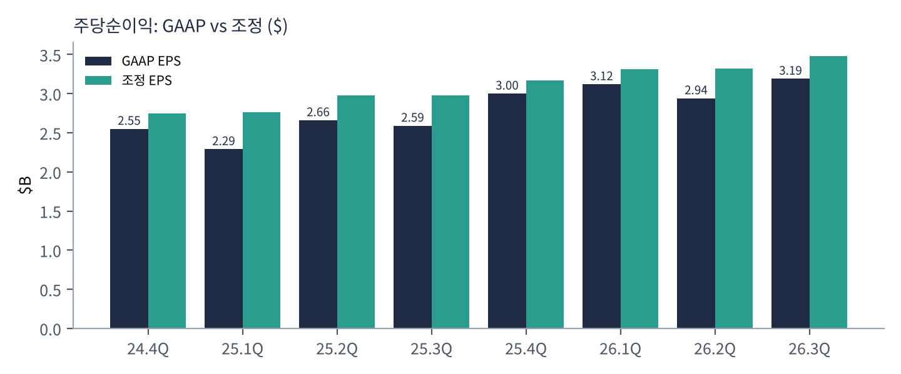
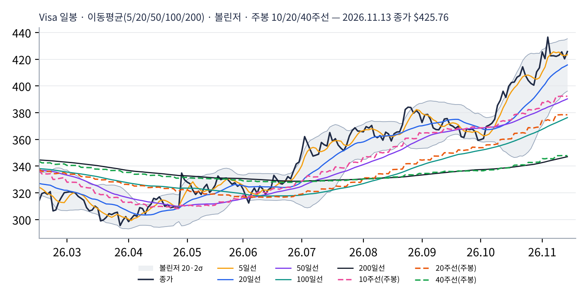
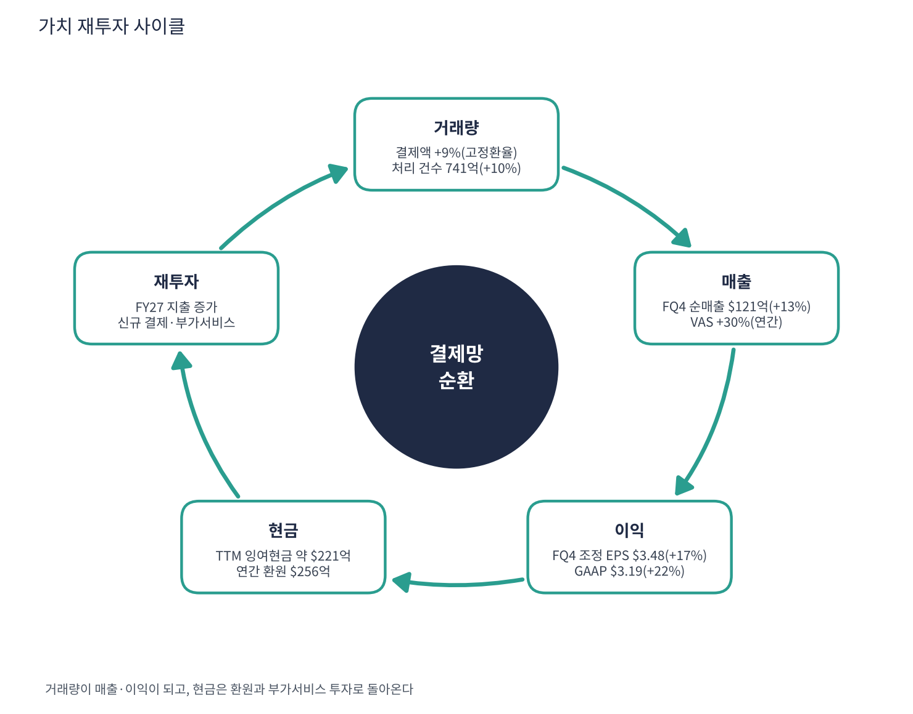

비자(V)는 전 세계 카드 결제망을 운영하고 결제 건수와 금액에 수수료를 받는 회사다. 직접 대출은 하지 않는다. 회계연도는 9월에 끝나며, FY26 4분기는 2026년 7~9월이다. FY26 순매출이 $459억(+15%)이고 조정 EPS가 +16%로 커졌지만, PER 32배(조정)에 FY27 EPS 성장 전망이 10%대 초반~중반으로 낮아지는 회사다.
| 항목 | 내용 |
|---|---|
| 종목 | Visa (V) · NYSE · 금융(결제) · 본사 미국 캘리포니아주 샌프란시스코 |
| 밸류에이션 | PER 34.8배(GAAP TTM), 조정 기준 약 32.1배 · P/S 17.23배 (11/13 종가 $425.76) |
| 최근 분기(FY26 4Q) | 순매출 $121.4억(+13%), 순이익 $59.5억, GAAP EPS $3.19(+22%), 조정 EPS $3.48(+17%) |
| 거래량 | 결제액 +9%(고정환율, $4.1조), 국가 간 거래 +14%(유럽 내부 제외), 처리 건수 742억(+10%) |
| 현금·부채 | 현금 약 $159억, 총차입금 약 $221억, TTM 잉여현금 약 $221억, TTM EBITDA 약 $319억(스캐너) |
| 가이던스(FY27) | 순매출 10%대 초반 성장, 조정 EPS 10%대 초반~중반 성장. FY27 1Q: EPS 증가율 10%대 중반의 하단 |
| 다음 일정 | FY27 1Q 실적 2027.1.28 예정(트레이딩뷰) |
| 직책 | 인물 | 역할·특징 |
|---|---|---|
| CFO | 크리스토퍼 수(Christopher Suh) | 국가 간 거래·소비 흐름을 설명 |
경영 스타일: '결제망의 규모를 키우고 부가서비스로 성장 폭을 넓힌다'. 상업 결제 거래량이 8년 만에 가장 빠르게 늘었다고 회사가 밝혔다. 연간 $256억을 배당·자사주로 돌려줬고 분기 배당을 16% 올렸다.
상업·자금이동 솔루션(CMS)이 FY26 +19%, 부가서비스(VAS)가 +30%(고정환율)로 커졌고 둘이 매출의 40% 이상이다. 비자 다이렉트 거래는 FQ4에 +23%였다.
FY27에도 규모·네트워크 보안·제품 개발 투자를 이어갈 계획이다. 세율은 FY27에 약 19%로 오른다고 보도됐다.
다음 실적발표는 세 가지 질문에 답하는 자리다.
1. 거래량이 이번 분기에 개선되나?
2. 악재 '높은 밸류에이션' 부담이 줄어드나?
3. PEG 판정이 바뀌나?
한 줄 판정 규칙: 첫 질문의 거래량이 좋아지면 약한 고리가 풀리고, 그렇지 않으면 현재 사이클의 약점이 그대로 남는다.
일정: 다음 발표일은 확인 필요(이번 분기 발표 후 일정 미확정). 위 현재값은 이 보고서의 기존 숫자다.
| 분기 | 매출 | 순이익 | EPS | 조정 EPS | 특이 사항 |
|---|---|---|---|---|---|
| FY25 1Q | $95.1억 | $50.6억 | 2.55 | 2.75 | |
| FY25 2Q | $95.9억 | $45.3억 | 2.29 | 2.76 | |
| FY25 3Q | $101.7억 | $52.2억 | 2.66 | 2.98 | |
| FY25 4Q | $107.2억 | $50.4억 | 2.59 | 2.98 | |
| FY26 1Q | $109.0억 | $58.0억 | 3.00 | 3.17 | |
| FY26 2Q | $112.3억 | $59.7억 | 3.12 | 3.31 | |
| FY26 3Q | $116.3억 | $55.8억 | 2.94 | 3.32 | |
| FY26 4Q | $121.4억 | $59.5억 | 3.19 | 3.48 | 순매출 +13%, 조정 EPS +17% |
회계연도 기준(FY26 4Q = 2026년 7~9월). FY26 4Q GAAP EPS $3.19는 회사 발표값이고 스캐너는 $3.16이다. 다른 분기 값도 스캐너와 회사 발표가 약간 다를 수 있으며 원인은 확인하지 못했다.


흐름 요약: 분기 순매출은 $95억에서 $121억으로 8분기 연속 대체로 늘었다. 조정 EPS는 $2.75에서 $3.48로 올랐다. GAAP과 조정 EPS 차이는 소송 충당 등 회사가 제외하는 항목 때문으로 보이나 이 자료에서는 구성을 확인하지 못했다. 영업이익과 분기 설비투자는 표에서 뺐다.
| 항목 | 최근 값 | 증감 | 비고 |
|---|---|---|---|
| 순매출(FQ4) | $121.4억 | +13% | 서비스 수익 $53억(+14%) |
| 결제액 | $4.1조 | +9% | 고정환율 |
| 처리 건수 | 742억 건 | +10% | 연간 2,813억 건(+9%) |
| 국가 간 거래 | – | +14% | 유럽 내부 제외 |
| CMS(FQ4) | – | +16% | 고정환율, 상업 결제 +13% |
| VAS(연간) | – | +30% | 고정환율 |
결제망 거래량이 기본 성장이고 부가서비스가 가속한다. 서비스 수익은 직전 분기 결제액을 기준으로 인식된다. 지역·카드 종류별 매출은 이 자료에서 구하지 못해 뺐다.
비자는 '결제망 + 부가서비스' 구조로 가려 한다.
| 축 | 최근 움직임 |
|---|---|
| 결제망 | 결제액 +9%, 국가 간 +14% |
| 상업·자금이동 | 상업 결제액 +13%, 비자 다이렉트 +23% |
| 부가서비스 | FY26 +30% |
| 주주환원 | FY26 $256억(배당·자사주), 배당 +16% |

| 이동평균 | 값 | 종가 대비 | 해석 |
|---|---|---|---|
| 5일선 | $423.36 | +0.6% | 현재가가 위 |
| 20일선 | $415.74 | +2.4% | 현재가가 위 |
| 50일선 | $390.36 | +9.1% | 현재가가 위 |
| 100일선 | $376.33 | +13.1% | 현재가가 위 |
| 200일선 | $347.06 | +22.7% | 현재가가 약 23% 위 |
주봉 흐름: 2025년 10월 $336~350 → 2026년 4월 저점 $293.9 → 8월 $362~382 → 10월 급등 $385~414 → 11/5 주 고점 $442.2 → 11/13 주 $425.8. 모든 이동평균선이 정렬 상승이다.
| 규칙 | 기준 | 현재 값 | 신호 |
|---|---|---|---|
| 장기 추세 필터 | 종가 vs 200일선 | $425.76 > $347.06 | 매수 |
| 중장기 교차 | 50일선 vs 200일선 | $390.36 > $347.06 | 매수 |
| 단기 교차 | 20일선 vs 50일선 | $415.74 > $390.36 | 매수 |
| 돈키언 채널 | 55일 고가 $442.23 / 저가 $356.75 | 중간값 $399.49 위 | 매수 |
| 1개월 모멘텀 | 21거래일 수익률 | +6.5% (기준 $399.75) | 매수 |
| 3개월 모멘텀 | 63거래일 수익률 | +18.6% (기준 $358.84) | 매수 |
| 6개월 모멘텀 | 126거래일 수익률 | +30.7% (기준 $325.75) | 매수 |
| 12개월 모멘텀 | 252거래일 수익률 | +25.6% (기준 $338.88) | 매수 |
| 종합 (8개 평균) | +1.00 | 강한 매수 |
해석: 8개 신호가 모두 매수(점수 +1.00)다. 현재가가 200일선보다 약 23% 위여서 과열 구간이다. 14일 ATR $10.37 (2.4%).
| 가격 | 무엇이 바뀌나 | 의미 |
|---|---|---|
| $399.8 이탈 | 1개월 기준가 | 1개월 모멘텀 매수 → 매도 |
| $399.5 이탈 | 돈키언 중간값 | 55일 채널 매수 → 매도 |
| $390.4 이탈 | 50일선(20/50 신호 근처) | 추세 신호 약화 |
| 구분 | 가격대 | 근거 |
|---|---|---|
| 저항 | $442.2 | 52주 고점(11/5) |
| 지지 1 | $416 | 20일선 $415.7 |
| 지지 2 | $390 ~ 400 | 50일선 $390.4, 1개월 기준가 $399.8 |
| 지지 3 | $376 | 100일선 |
모든 신호가 매수지만 고점 추격은 위험하다. 20일선~1개월 기준가($400~418)까지 눌릴 때 계획 비중의 30%만 진입하고 50일선($390) 종가 이탈 시 손절한다. 1차 목표 $442.2는 52주 고점, 2차 $470은 내 가정(+10%)이다. 조건은 1/28 실적의 FY27 1Q 성장률 확인이다.
| 악재 요인 | 내용 | 강도 |
|---|---|---|
| 성장 둔화 전망 | FY27 순매출 10%대 초반, 조정 EPS 10%대 초반~중반 | 중간 |
| 높은 밸류에이션 | 조정 PER 32배, PEG 2.0, P/S 17배 | 높음 |
| 세율 상승 | FY27 약 19%(보도) | 낮음~중간 |
| 규제·소송 | 수수료 규제·소송 위험(이번 자료에서 세부 미확인) | 중간 |
| 티커 | 회사 | PER(TTM) | PEG | P/S | EPS 성장(YoY) |
|---|---|---|---|---|---|
| V | 비자 | 32.1배 | 2.03 | 17.23배 | +16% |
| MA | 마스터카드 | 33.5배 | 1.48 | 15.74배 | +23% |
| AXP | 아메리칸 익스프레스 | 18.1배 | – | 2.48배 | +19% |
| PYPL | 페이팔 | 11.3배 | – | 1.45배 | +5% |
V·MA는 조정 EPS 기준(내 계산), AXP·PYPL은 트레이딩뷰 GAAP TTM이다. 카드 발행사(AXP)·핀테크(PYPL)는 사업 구조가 달라 직접 비교가 어렵다.
비교 결론: V와 MA는 결제망 사업으로 비슷한 배수(PER 32~34배)를 받는다. PEG는 MA(1.48)가 V(2.03)보다 낮다.
비자는 현금이 풍부하고 차입금이 낮다. 현금 약 $159억, 총차입금 약 $221억이다.
| 지표 | 값 | 계산·출처 | 해석 |
|---|---|---|---|
| 현금 등 | 약 $159억 | 스캐너 | |
| 총차입금 | 약 $221억 | 스캐너 | 순부채 약 $62억 |
| TTM 잉여현금흐름 | 약 $221억 | 스캐너 | – |
| TTM EBITDA | 약 $319억 | 스캐너 | 순부채/EBITDA 약 0.2배 |
| 기준 | 값 | 비고 |
|---|---|---|
| P/S (TTM) | 17.23배 | 순매출 약 $459억(내 계산) |
| P/FCF | 약 36배 | 잉여현금 $221억(내 계산) |
| 동종 | 마스터카드 15.7, 아멕스 2.5, 페이팔 1.5 | 11/13 스캐너 |
해석: 잉여현금 수익률은 2.8%로 낮다. 스트레스 가정: P/FCF 28배면 약 $334 (-22%), 33배면 약 $393 (-8%), 40배면 약 $477 (+12%)이다(내 가정, TTM 잉여현금 $221억 고정).
| 지표 | 값 | 판정 |
|---|---|---|
| PER (GAAP TTM) | 34.8배 | 트레이딩뷰, TTM EPS $12.22 |
| PER (조정 TTM) | 32.1배 | FY26 조정 EPS $13.28 (4분기 합, 내 계산. 회사 발표 $13.27) |
| EV / EBITDA | 약 24.9배 | EV(차입금 $221억 − 현금 $159억 반영),957억, ÷ $319억 |
| 방식 | PER | EPS 성장률 | PEG | 판정 |
|---|---|---|---|---|
| 트레이딩뷰 (GAAP TTM) | 34.8배 | +21.0% | 약 1.66 | 트레이딩뷰는 PEG 미제공. 내 계산 |
| 조정 EPS 기준 | 32.1배 | +15.8% | 약 2.03 | 기준 초과 |
| 조정 TTM $13.28 ÷ 직전 FY25 $11.47 | – | – | – | FY25: 2.75 + 2.76 + 2.98 + 2.98 |
| FY27 가이던스 EPS 증가율 약 12%(내 가정) | 32.1배 | +12% | 약 2.7 | 10%대 초반~중반의 중간값을 가정 |
판정: 조정 PEG 약 2.03으로 기준(1.0)을 넘음. FY27 성장 전망(10%대 초반~중반)을 쓰면 약 2.7이다. 높은 질과 안정성에 프리미엄이 붙은 가격이다.

비자의 사이클은 거래량 → 순매출 → 이익 → 현금 → 환원·재투자다. 약한 고리는 FY27 성장 둔화 전망이다.
| 고리 | 현재 숫자 | 고리 강도 | 약해지는 신호 |
|---|---|---|---|
| ① 거래량 | 결제액 +9%, 국가 간 +14% | 강함 | 소비 둔화 |
| ② 순매출 | $121.4억(+13%) | 강함 | 고객 인센티브 증가 |
| ③ 이익 | 조정 EPS +17% | 강함 | 세율 상승(약 19%) |
| ④ 현금 | TTM 잉여현금 $221억 | 강함 | 소송 합의금 |
| ⑤ 환원 | 연 $256억, 배당 +16% | 강함 | 주가 상승 시 매입 효율 저하 |
구조: 모든 고리가 강하다. 확인 지점은 FY27 지출 증가가 매출 성장을 앞서지 않는지다.